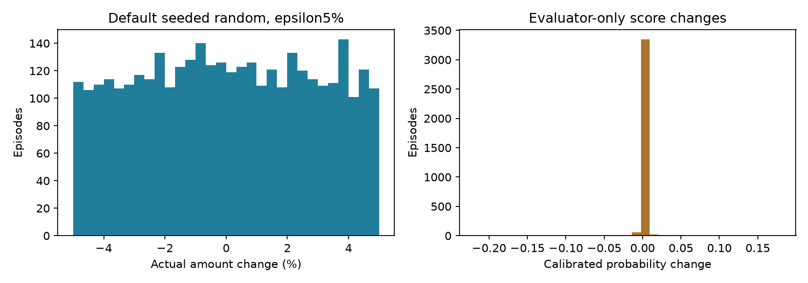
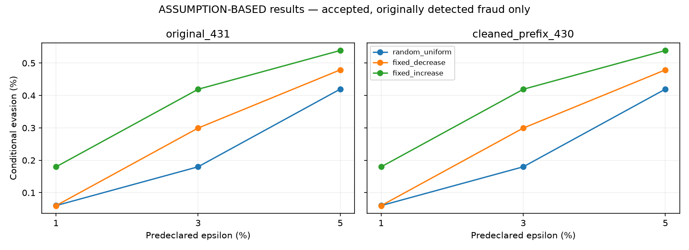

READY_FOR_ASSUMPTION_BASED_PPO for the declared bounded computational task. STRICT remains BLOCKED. Real-world transaction manipulability and causal label preservation have not been established. No PPO training was run.
Only TransactionAmt changes. All other fields remain fixed under an explicit approximation; dependencies remain UNKNOWN_DEPENDENCY. Results below are ASSUMPTION-BASED IEEE-CIS RESULTS.
Source fraud: 3,537; eligible fraud: 3,537; episode rows: 84,888 across 2 models ×3 epsilons ×4 policies. Repeated sources across separate reference experiments are not unique fraud counts. No Validation or Final Holdout tuning/evaluation was performed.
Plausibility fits exactly 265,743 Defender Fit rows; exact IDs/time metadata are verified. Fresh temporal Original431 and Cleaned430 models are frozen. All prior protected files remain byte-identical.
Box(1), max3 steps; absolute original_amount*(1+epsilon*action). Default epsilon5%, sensitivity1/3/5%. STOP deadband1e-6 retains current candidate. One terminal decision-only query. 11 causal observation fields; no evaluator probabilities or unreleased labels. Lambda cost0.1; valid APPROVE+1−cost, FLAG−1−cost, invalid−2−accepted cost, identity0. This is a bounded multi-step interface without iterative Defender feedback.
Actual source: decimal128(8, 3); exact Decimal proposals rounded HALF_EVEN to .001 within the budget grid. Overflow, nonfinite and nonpositive inputs reject. Saved model preprocessing uses float32. Maximum measured modified-amount conversion error: 0.000119140625. Decimal-nonidentity episodes that become identical at float32 input: 0. Conversion diagnostics are saved explicitly.
| dataset_version | source_fraud_transactions | eligible_fraud | attack_attempts | accepted_nonidentity | unchanged | assumption_acceptance_rate | originally_detected_fraud | accepted_originally_detected_denominator | successful_decision_flips | conditional_evasion_rate | overall_accepted_attack_evasion_rate | max_query_count |
|---|---|---|---|---|---|---|---|---|---|---|---|---|
| cleaned_prefix_430 | 3537 | 3537 | 3537 | 3535 | 2 | 0.999435 | 1670 | 1668 | 7 | 0.004197 | 0.528996 | 1 |
| original_431 | 3537 | 3537 | 3537 | 3535 | 2 | 0.999435 | 1670 | 1668 | 7 | 0.004197 | 0.528996 | 1 |
Conditional rate measures newly evaded detections. Overall approved fraction includes fraud already approved before modification. Identity rows never enter either attack-success denominator.

| dataset_version | epsilon | policy | accepted_nonidentity | rejected | original_flag_rate | modified_flag_rate | accepted_originally_detected_denominator | successful_decision_flips | conditional_evasion_rate | overall_accepted_attack_evasion_rate | mean_probability_change | mean_cost | mean_reward |
|---|---|---|---|---|---|---|---|---|---|---|---|---|---|
| cleaned_prefix_430 | 0.010000 | fixed_decrease | 3537 | 0 | 0.472152 | 0.472152 | 1670 | 1 | 0.000599 | 0.527848 | -0.000360 | 0.099915 | -0.044218 |
| cleaned_prefix_430 | 0.010000 | fixed_increase | 3537 | 0 | 0.472152 | 0.471869 | 1670 | 3 | 0.001796 | 0.528131 | 0.000068 | 0.099915 | -0.043653 |
| cleaned_prefix_430 | 0.010000 | identity | 0 | 0 | 0.472152 | 0.472152 | 0 | 0 | NOT APPLICABLE | NOT APPLICABLE | 0.000000 | 0.000000 | 0.000000 |
| cleaned_prefix_430 | 0.010000 | random_uniform | 3531 | 0 | 0.472152 | 0.472717 | 1665 | 1 | 0.000601 | 0.527896 | -0.000031 | 0.048858 | 0.006839 |
| cleaned_prefix_430 | 0.030000 | fixed_decrease | 3537 | 0 | 0.472152 | 0.471021 | 1670 | 5 | 0.002994 | 0.528979 | -0.000561 | 0.099972 | -0.042013 |
| cleaned_prefix_430 | 0.030000 | fixed_increase | 3537 | 0 | 0.472152 | 0.471869 | 1670 | 7 | 0.004192 | 0.528131 | 0.000426 | 0.099972 | -0.043710 |
| cleaned_prefix_430 | 0.030000 | identity | 0 | 0 | 0.472152 | 0.472152 | 0 | 0 | NOT APPLICABLE | NOT APPLICABLE | 0.000000 | 0.000000 | 0.000000 |
| cleaned_prefix_430 | 0.030000 | random_uniform | 3535 | 0 | 0.472152 | 0.472434 | 1668 | 3 | 0.001799 | 0.527864 | 0.000025 | 0.048855 | 0.006842 |
| cleaned_prefix_430 | 0.050000 | fixed_decrease | 3537 | 0 | 0.472152 | 0.469890 | 1670 | 8 | 0.004790 | 0.530110 | -0.001088 | 0.099983 | -0.039762 |
| cleaned_prefix_430 | 0.050000 | fixed_increase | 3537 | 0 | 0.472152 | 0.472434 | 1670 | 9 | 0.005389 | 0.527566 | 0.000647 | 0.099983 | -0.044852 |
| cleaned_prefix_430 | 0.050000 | identity | 0 | 0 | 0.472152 | 0.472152 | 0 | 0 | NOT APPLICABLE | NOT APPLICABLE | 0.000000 | 0.000000 | 0.000000 |
| cleaned_prefix_430 | 0.050000 | random_uniform | 3535 | 0 | 0.472152 | 0.471303 | 1668 | 7 | 0.004197 | 0.528996 | -0.000095 | 0.048856 | 0.009103 |
| original_431 | 0.010000 | fixed_decrease | 3537 | 0 | 0.472152 | 0.472152 | 1670 | 1 | 0.000599 | 0.527848 | -0.000360 | 0.099915 | -0.044218 |
| original_431 | 0.010000 | fixed_increase | 3537 | 0 | 0.472152 | 0.471869 | 1670 | 3 | 0.001796 | 0.528131 | 0.000068 | 0.099915 | -0.043653 |
| original_431 | 0.010000 | identity | 0 | 0 | 0.472152 | 0.472152 | 0 | 0 | NOT APPLICABLE | NOT APPLICABLE | 0.000000 | 0.000000 | 0.000000 |
| original_431 | 0.010000 | random_uniform | 3531 | 0 | 0.472152 | 0.472717 | 1665 | 1 | 0.000601 | 0.527896 | -0.000031 | 0.048858 | 0.006839 |
| original_431 | 0.030000 | fixed_decrease | 3537 | 0 | 0.472152 | 0.471021 | 1670 | 5 | 0.002994 | 0.528979 | -0.000561 | 0.099972 | -0.042013 |
| original_431 | 0.030000 | fixed_increase | 3537 | 0 | 0.472152 | 0.471869 | 1670 | 7 | 0.004192 | 0.528131 | 0.000426 | 0.099972 | -0.043710 |
| original_431 | 0.030000 | identity | 0 | 0 | 0.472152 | 0.472152 | 0 | 0 | NOT APPLICABLE | NOT APPLICABLE | 0.000000 | 0.000000 | 0.000000 |
| original_431 | 0.030000 | random_uniform | 3535 | 0 | 0.472152 | 0.472434 | 1668 | 3 | 0.001799 | 0.527864 | 0.000025 | 0.048855 | 0.006842 |
| original_431 | 0.050000 | fixed_decrease | 3537 | 0 | 0.472152 | 0.469890 | 1670 | 8 | 0.004790 | 0.530110 | -0.001088 | 0.099983 | -0.039762 |
| original_431 | 0.050000 | fixed_increase | 3537 | 0 | 0.472152 | 0.472434 | 1670 | 9 | 0.005389 | 0.527566 | 0.000647 | 0.099983 | -0.044852 |
| original_431 | 0.050000 | identity | 0 | 0 | 0.472152 | 0.472152 | 0 | 0 | NOT APPLICABLE | NOT APPLICABLE | 0.000000 | 0.000000 | 0.000000 |
| original_431 | 0.050000 | random_uniform | 3535 | 0 | 0.472152 | 0.471303 | 1668 | 7 | 0.004197 | 0.528996 | -0.000095 | 0.048856 | 0.009103 |

No best action, direction or epsilon was selected retrospectively. Each cell is a separate predeclared single-query reference experiment.
Hard finite/positive/Decimal/budget/metadata checks all PASS on executed episode outputs. 3,842 episode outputs lie outside fit q01–q99; 0 lie outside the full fit amount range. These are repeated episode counts, not unique sources. They remain soft rarity diagnostics under the predeclared acceptance policy, not evidence of impossibility.
| rows | minimum | maximum | q01 | q99 | median_log | mad_log |
|---|---|---|---|---|---|---|
| 265743 | 0.292000 | 6085.230000 | 10.000000 | 1033.664000 | 4.247781 | 0.522904 |
Conditional ProductCD/card4/card6 distributions require≥200 fitting rows. Robust global and conditional log-MAD scores, original/modified anomalies and support flags are in plausibility_validation.csv. No statistical filter was loosened after examining attack results.
| epsilon | policy | paired_rows | max_absolute_probability_difference | mean_absolute_probability_difference | decision_disagreements | identical_actions | identical_modified_amounts |
|---|---|---|---|---|---|---|---|
| 0.010000 | fixed_decrease | 3537 | 0.000000 | 0.000000 | 0 | True | True |
| 0.010000 | fixed_increase | 3537 | 0.000000 | 0.000000 | 0 | True | True |
| 0.010000 | identity | 3537 | 0.000000 | 0.000000 | 0 | True | True |
| 0.010000 | random_uniform | 3537 | 0.000000 | 0.000000 | 0 | True | True |
| 0.030000 | fixed_decrease | 3537 | 0.000000 | 0.000000 | 0 | True | True |
| 0.030000 | fixed_increase | 3537 | 0.000000 | 0.000000 | 0 | True | True |
| 0.030000 | identity | 3537 | 0.000000 | 0.000000 | 0 | True | True |
| 0.030000 | random_uniform | 3537 | 0.000000 | 0.000000 | 0 | True | True |
| 0.050000 | fixed_decrease | 3537 | 0.000000 | 0.000000 | 0 | True | True |
| 0.050000 | fixed_increase | 3537 | 0.000000 | 0.000000 | 0 | True | True |
| 0.050000 | identity | 3537 | 0.000000 | 0.000000 | 0 | True | True |
| 0.050000 | random_uniform | 3537 | 0.000000 | 0.000000 | 0 | True | True |
Same source IDs, actions, epsilon and modified amounts were checked explicitly. Probability equality is a measured result for these episodes; removal of fitting-prefix-constant v107 was not assumed to guarantee equality.
| version | transactions | source_fraud | modified | court | audit | verified_fraud | verified_legitimate | verified_modified | pending_after_drain | attacker_queries |
|---|---|---|---|---|---|---|---|---|---|---|
| original_431 | 10000 | 320 | 320 | 180 | 19 | 90 | 109 | 90 | 0 | 320 |
| cleaned_prefix_430 | 10000 | 320 | 320 | 180 | 19 | 90 | 109 | 90 | 0 | 320 |
Frozen Defender, rule-based Court, separate180+20 budgets, seeded Uniform(1,3)-day verification. Completed-only memory links source/modified vectors, model decision, Court action, verification result and assumed label contract. Pending labels are withheld. Explicit diagnostic draining stays within Development and is not policy training.
106 tests PASS, including73 prior regression tests. Covers arithmetic, precision/overflow, STOP/step/query budgets, identity exclusions, exact fit provenance/future contamination, actual saved-model Gym inference, paired models, label isolation, delayed memory provenance and artifact integrity.
| test | status | seconds |
|---|---|---|
| test_environment.AttackerTests.test_continuous_bounds_dependents_and_cost | PASS | 0.000277 |
| test_environment.AttackerTests.test_invalid_action_and_perturbation_budget | PASS | 0.000121 |
| test_environment.AttackerTests.test_query_budget_stop_and_fixed_observations | PASS | 0.000138 |
| test_environment.AttackerTests.test_real_data_is_blocked | PASS | 0.000054 |
| test_environment.AttackerTests.test_synthetic_gymnasium_api | PASS | 0.000513 |
| test_environment.EnvironmentTests.test_agent_info_cannot_mutate_internal_event_log | PASS | 0.000158 |
| test_environment.EnvironmentTests.test_blocked_investigate_no_double_cost | PASS | 0.000111 |
| test_environment.EnvironmentTests.test_budget_exact_window_rollover | PASS | 0.000027 |
| test_environment.EnvironmentTests.test_budget_exhaustion_reserve_separation | PASS | 0.000012 |
| test_environment.EnvironmentTests.test_chronological_order_reset_and_batches | PASS | 0.000048 |
| test_environment.EnvironmentTests.test_court_gymnasium_api | PASS | 0.000584 |
| test_environment.EnvironmentTests.test_delayed_verification_timing_and_outcomes | PASS | 0.000042 |
| test_environment.EnvironmentTests.test_duplicate_ids_rejected | PASS | 0.000026 |
| test_environment.EnvironmentTests.test_episode_censor_explicit_drain_and_reset_archive | PASS | 0.000174 |
| test_environment.EnvironmentTests.test_flagged_fraud_reward | PASS | 0.000096 |
| test_environment.EnvironmentTests.test_hidden_label_isolation_until_verification | PASS | 0.000248 |
| test_environment.EnvironmentTests.test_identity_keeps_values_and_does_not_alias_source | PASS | 0.000032 |
| test_environment.EnvironmentTests.test_immediate_delayed_rewards_and_attribution | PASS | 0.000119 |
| test_environment.EnvironmentTests.test_metadata_observation_rejected | PASS | 0.000018 |
| test_environment.EnvironmentTests.test_missing_observation_mask | PASS | 0.000078 |
| test_environment.EnvironmentTests.test_no_premature_memory_and_no_duplicates | PASS | 0.000447 |
| test_environment.EnvironmentTests.test_parquet_schema_holdout_boundary_missing_values | PASS | 0.025283 |
| test_environment.EnvironmentTests.test_pending_survives_budget_window | PASS | 0.000208 |
| test_environment.EnvironmentTests.test_random_audits_only_approved_and_not_court_rewards | PASS | 0.000170 |
| test_environment.EnvironmentTests.test_random_delay_seed_reproducibility | PASS | 0.000238 |
| test_environment.EnvironmentTests.test_skip_does_not_reveal_or_charge | PASS | 0.000099 |
| test_environment.FrozenDefenderIntegrationTests.test_frozen_schema_calibration_and_missing_values | PASS | 0.048873 |
| test_environment.FrozenDefenderIntegrationTests.test_missing_artifacts_are_not_substituted | PASS | 0.000553 |
| test_environment.FrozenDefenderIntegrationTests.test_reordered_schema_is_consistent_and_extra_label_rejected | PASS | 0.034588 |
| test_readiness.ConstraintTests.test_actual_displacement_budget_and_history | PASS | 0.000198 |
| test_readiness.ConstraintTests.test_bounds_are_rejected_not_clipped | PASS | 0.000179 |
| test_readiness.ConstraintTests.test_constraint_gymnasium_adapter | PASS | 0.000822 |
| test_readiness.ConstraintTests.test_continuous_dimensions_and_stop | PASS | 0.000137 |
| test_readiness.ConstraintTests.test_denominators_condition_on_eligible_modified_fraud | PASS | 0.000025 |
| test_readiness.ConstraintTests.test_dependency_recomputed_and_checked | PASS | 0.000089 |
| test_readiness.ConstraintTests.test_deterministic_replay | PASS | 0.000283 |
| test_readiness.ConstraintTests.test_identity_is_not_an_adversarial_success | PASS | 0.000036 |
| test_readiness.ConstraintTests.test_label_assumption_is_tracked_not_fact | PASS | 0.000166 |
| test_readiness.ConstraintTests.test_missing_control_is_unknown_without_imputation | PASS | 0.000080 |
| test_readiness.ConstraintTests.test_original_and_metadata_unchanged | PASS | 0.000072 |
| test_readiness.ConstraintTests.test_query_budget_feedback_and_rewards | PASS | 0.000087 |
| test_readiness.ConstraintTests.test_scenario_B_unknown_dependency_never_accepted | PASS | 0.000117 |
| test_readiness.ConstraintTests.test_synthetic_or_unreferenced_evidence_cannot_promote_real_dependency | PASS | 0.000048 |
| test_readiness.ConstraintTests.test_unknown_and_immutable_controls_rejected | PASS | 0.000027 |
| test_readiness.CreditTests.test_audit_logging_and_budget | PASS | 0.000198 |
| test_readiness.CreditTests.test_collector_excludes_audit_and_preserves_pending_across_windows | PASS | 0.000170 |
| test_readiness.CreditTests.test_executed_numerical_credit_cases | PASS | 0.001197 |
| test_readiness.CreditTests.test_no_future_label_and_origin_state_not_rewritten | PASS | 0.000032 |
| test_readiness.CreditTests.test_time_discount_domain | PASS | 0.000014 |
| test_readiness.CreditTests.test_timestamp_gate_catches_incorrect_partition_tag | PASS | 0.000026 |
| test_readiness.TemporalTests.test_alignment_detects_missing_transaction | PASS | 0.007132 |
| test_readiness.TemporalTests.test_revised_fit_pipeline_executes_only_on_synthetic_fixture | PASS | 0.026510 |
| test_readiness.TemporalTests.test_windows_and_maturation_guard | PASS | 0.001721 |
| test_validation.ActualDataTests.test_categories_fit_only_and_independent_artifacts | PASS | 1.069637 |
| test_validation.ActualDataTests.test_exact_partition_membership_and_alignment | PASS | 0.104166 |
| test_validation.ActualDataTests.test_fresh_model_provenance_and_order | PASS | 0.093680 |
| test_validation.ActualDataTests.test_independent_smoke_maturation | PASS | 0.000367 |
| test_validation.ActualDataTests.test_no_holdout_evaluation_and_aligned_comparison | PASS | 0.017644 |
| test_validation.ActualDataTests.test_prior_artifacts_unchanged | PASS | 0.098336 |
| test_validation.AttackerTests.test_bad_shape_and_nan_reject | PASS | 0.005154 |
| test_validation.AttackerTests.test_k_dimensions_and_gym | PASS | 0.001753 |
| test_validation.AttackerTests.test_rewards_and_identity_denominator | PASS | 0.001774 |
| test_validation.AttackerTests.test_stop_and_single_terminal_query | PASS | 0.001292 |
| test_validation.CreditTests.test_boundary_and_truncation | PASS | 0.000253 |
| test_validation.CreditTests.test_causal_history_prefixes | PASS | 0.000186 |
| test_validation.CreditTests.test_manual_targets_and_gradient | PASS | 0.000200 |
| test_validation.CreditTests.test_no_double_counted_returns | PASS | 0.000161 |
| test_validation.CreditTests.test_observation_has_known_horizon | PASS | 0.000044 |
| test_validation.CreditTests.test_pending_and_wrong_partition | PASS | 0.000039 |
| test_validation.CreditTests.test_replay_cannot_be_exported_twice_through_another_adapter | PASS | 0.000163 |
| test_validation.CreditTests.test_reward_coefficients | PASS | 0.000017 |
| test_validation.SelectionTests.test_future_poison_cannot_change_selection | PASS | 0.014116 |
| test_validation.SelectionTests.test_missingness_not_blindly_dropped | PASS | 0.000018 |
| test_assumption.ActualExperimentTests.test_actual_smoke | PASS | 0.000375 |
| test_assumption.ActualExperimentTests.test_denominators_recomputed | PASS | 0.033701 |
| test_assumption.ActualExperimentTests.test_development_only_and_queries | PASS | 0.001789 |
| test_assumption.ActualExperimentTests.test_fit_prefix_provenance | PASS | 0.023492 |
| test_assumption.ActualExperimentTests.test_hard_checks_and_causal_status | PASS | 0.200905 |
| test_assumption.ActualExperimentTests.test_no_identity_in_asr | PASS | 0.000947 |
| test_assumption.ActualExperimentTests.test_prior_sources_models_reports_unchanged | PASS | 0.180284 |
| test_assumption.ActualExperimentTests.test_real_gym_terminal_matches_batched_experiment | PASS | 0.113531 |
| test_assumption.ActualExperimentTests.test_same_source_actions_and_amounts | PASS | 0.011127 |
| test_assumption.EngineTests.test_absolute_not_cumulative_mapping | PASS | 0.003084 |
| test_assumption.EngineTests.test_box_bounds_and_invalid_shape | PASS | 0.011472 |
| test_assumption.EngineTests.test_contracts_required | PASS | 0.001858 |
| test_assumption.EngineTests.test_deadband_retains_current | PASS | 0.001918 |
| test_assumption.EngineTests.test_decimal_exact_mapping_and_rounding | PASS | 0.001921 |
| test_assumption.EngineTests.test_epsilon_and_cost | PASS | 0.005692 |
| test_assumption.EngineTests.test_gym_and_observation_no_oracle | PASS | 0.002482 |
| test_assumption.EngineTests.test_hidden_label_not_in_observation | PASS | 0.001959 |
| test_assumption.EngineTests.test_immutable_and_label_contract | PASS | 0.001931 |
| test_assumption.EngineTests.test_invalid_amounts | PASS | 0.014844 |
| test_assumption.EngineTests.test_invalid_no_query | PASS | 0.001887 |
| test_assumption.EngineTests.test_max_steps_and_single_query | PASS | 0.001924 |
| test_assumption.EngineTests.test_positive_and_relative_budget_grid | PASS | 0.110772 |
| test_assumption.EngineTests.test_precision_overflow_rejected | PASS | 0.001862 |
| test_assumption.EngineTests.test_reward_values | PASS | 0.000016 |
| test_assumption.EngineTests.test_same_id_seed_actions | PASS | 0.000059 |
| test_assumption.EngineTests.test_stop_and_identity_reward | PASS | 0.001878 |
| test_assumption.EngineTests.test_strict_separation | PASS | 0.001865 |
| test_assumption.HybridTests.test_delayed_memory_provenance_and_label_isolation | PASS | 0.003135 |
| test_assumption.HybridTests.test_reproducible_hybrid | PASS | 0.005230 |
| test_assumption.PlausibilityTests.test_exact_fit_and_conditional_support | PASS | 0.001869 |
| test_assumption.PlausibilityTests.test_future_contamination_detection | PASS | 0.000846 |
| test_assumption.PlausibilityTests.test_saved_provenance_rejected_if_changed | PASS | 0.001853 |
| test_assumption.PlausibilityTests.test_soft_anomalies_do_not_reject | PASS | 0.001915 |
# Phase 4 attacker readiness **Mode B: READY_FOR_ASSUMPTION_BASED_PPO** The declared Box(1) task, Decimal transform, hard constraints, fixed-prefix plausibility, terminal decision-only query budget, reward, paired actual-data experiments and delayed-verification integration are validated. 106 tests PASS, including all 73 earlier regression tests. No PPO was trained. **STRICT: BLOCKED. Real-world causal attack validity: NOT ESTABLISHED.** No anonymous feature is promoted to causally mutable. Holding non-amount fields fixed and fraud intent unchanged are explicit counterfactual assumptions. Statistical plausibility does not establish realizability. Next: implement the development-only source sampler and PPO training orchestration with fixed seeds/budgets; compare against the saved identity/random/directional references and a one-step contextual-bandit baseline. Keep the default epsilon=.05 and lambda=.1 unless a new predeclared development protocol is recorded. Reward/epsilon sensitivity is not a license to optimize on final holdout. Evaluate a frozen policy on RL Validation with separate denominators and one query per episode. Court remains PARTIAL, and continual Defender updating is not implemented. Keep the Phase3.6 delayed-credit semantics; this phase only validates rule-based end-to-end integration. Prior temporal Defender/label-availability assumptions remain unchanged. Final holdout was historically baseline-evaluated, but no new Validation or Holdout feature/label data were loaded for these experiments.
These simple reference policies provide a baseline, not evidence that a trained PPO improves evasion. Absolute amount edits may violate unknown real dependencies. Fraud intent preservation and offline historical label availability remain assumptions. No full Court learner or continual Defender retraining is implemented.
.venv_defender/bin/python scripts/run_phase3_7.py .venv_defender/bin/python scripts/test_phase3_7.py .venv_defender/bin/python scripts/report_phase3_7.py